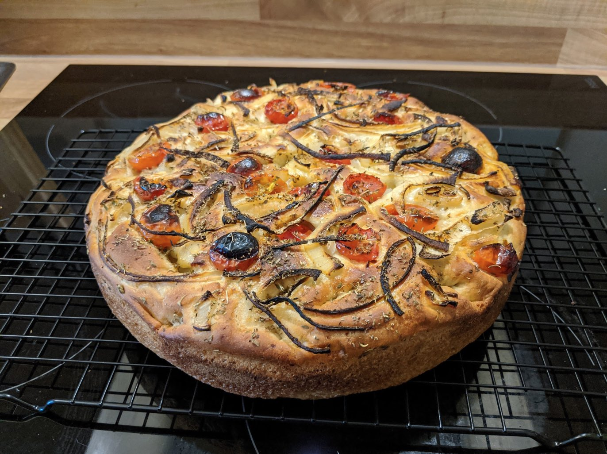

Ingredients
- 500g flour
- 1 sachet yeast (10g, if using 1kg flour)
- 1 medium potato (and the salt water it is boiled in)
- Rosemary
- Chopped tomatoes (skin side should not be exposed, it can burn)
- 1 small thickly-sliced onion
- Oregano
- Olive oil
Instructions
- Boil the peeled potato and salt the water.
- Place in a mixing bowl and mash.
- Add in the flour and yeast.
- Then add the water (it might need to cool down a little first) slowly until a soft dough is
formed.
- Coat the bottom of the baking dish in olive oil, and press the dough into the dish until it is
level.
- Decorate with the chopped tomatoes and sliced onion, before sprinkling with oregano.
- Place in the oven and allow to rise for 1 hour. If it’s too puffed up, prod with a fork to
release some of the air.
- Turn the cold oven on to about 180C when the focaccia has risen, and bake for about 40 minutes
or until golden brown.